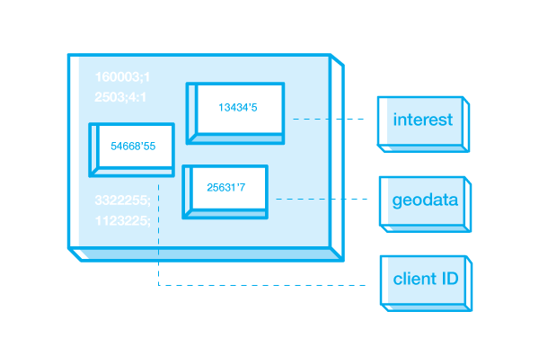
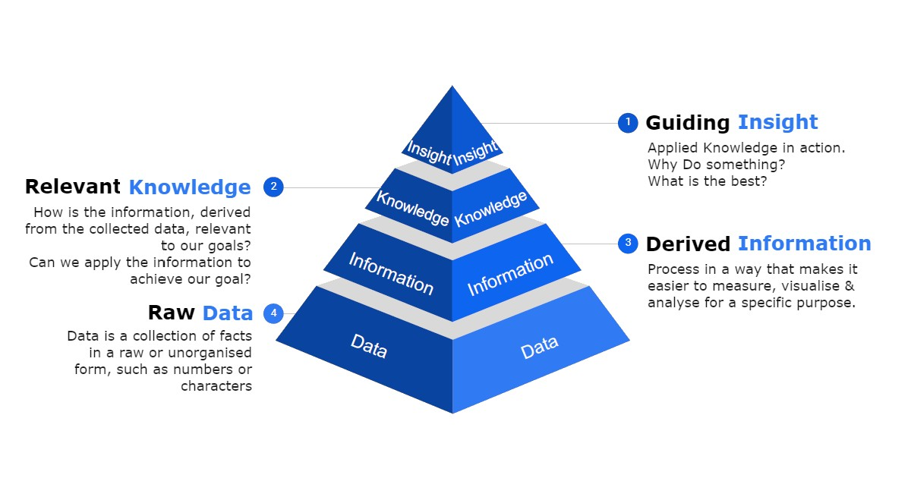
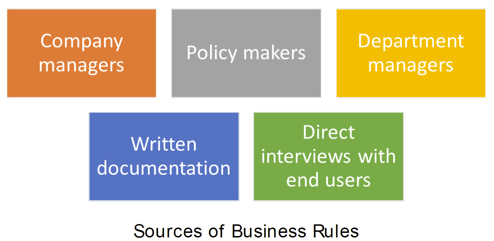
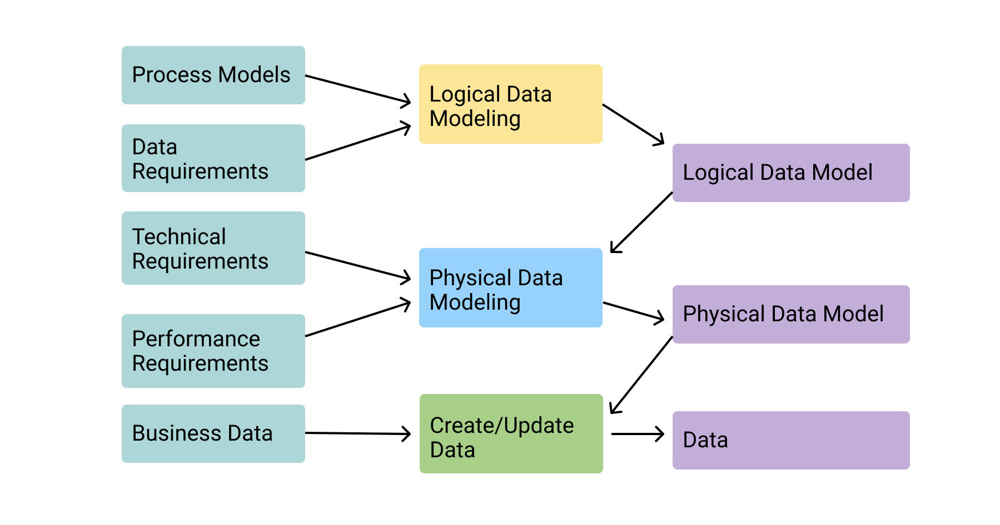

Data and Data Modeling
Instructor: Chris Fulton

Agenda
- Articulate the purpose of a database
- Explain the difference between data, information and knowledge
- Install database development software and tools
- Analyzing various Data Models
- Conceptual | Logical | Physical
What is a database?
Definition
A database is an organized collection of structured information, or data, typically stored electronically in a computer system.
Different Types of DB
Selection of DB should be based upon how, when, where and who will use the data.

Relational & Non-Relational are the overarching categories of DB's
What is Data?
Raw Data
Data
- Data - Consist of raw facts
Raw Data
- Raw Data - indicates that the facts have not yet been processes to reveal their meaning.
The purpose of collecting raw data is to extract meaning.
Data Pyramid
Raw Data
Information
Knowledge
Intelligence / Insight / Wisdom
Learning Activity
Assume you want to create a database for a community that is looking to start a neighborhood watch program. The community would like to have information on volunteers, incidents that occur, meeting agendas and an evening watch schedule. The community will ultimately have a website that displays a evening watch schedule, a list of all incidents and a page that displays upcoming and previous meeting agenda's.
Questions
What initials questions would you have for the community?
Data
What data would you collect? Make a list of all the data you would need to collect?
Grouping Data
How would you organize/group the data? What data can we remove? What data is essential and provides strategic insight?
Why is it important to think of data in this structure?
Data Modeling
Data Models + Data Modeling
Model: Abstraction of a real-world object or event
Data Models
- Are a communication tool
- Give an overview of the database
- Organize data for various users
- Are an abstraction for the creation of good database
Data Modeling
- Iterative and progressive process of creating a specific data model for a determined problem domain
- The process of transforming logical data models into physical data Models
Business Rules
Definition
Brief, precise, and unambiguous description of a policy, procedure, or principle.
Some business rule describes a constraint that cannot be shown in the ER diagram
Purpose
Describe main and distinguishing characteristics of the data
Example
- A community watch group member can submit one or more incidents.- An incident can be assigned multiple categories - An agenda can be only be created by site administrator who is also a member

Data Modeling
Minimum data rule: All that is needed is there, and all that is there is needed
Conceptual Design
- Design a database independent of database software and physical details Conceptual data model – Describes main data entities, attributes, relationships, and contraints
Logical Design
- The process of transforming (or mapping) a conceptual schema of the application domain into a schema for the data model
- some software is typically to create and map this model
Physical Design
- modifies how the data is formatted (framed) and transported between the client and server, both of which manage the entire process, and hides all the complexity from our applications within the new framing layer
- The process of transforming logical data models into physical data Models
Conceptual Model

Conceptual Model
Types of ER-Models

Conceptual Model Cont.
Conceptual Modeling is an iterative process that requires you to constantly revisit your conceptual model and make alterations

Logical Model
Logical Model
A logical design is a conceptual, abstract design. You do not deal with the physical implementation details yet; you start to define the types of information that you need.
MPLS Renters Example
Entities and the Relationships that exist
What is Depicted in ER Diagram:
Entity NameEntity StrengthRelationship Strength(Weak and Strong)Primary Key + Foriegn KeyCardinalityNull vs. Not NullSometimes the Data type
MPLS Renters Example
Entities and the Relationships that exist
Subset of Relationships Rules:
A PROPERTY can be associated with one or more PROP_AMEN_LIST, each PROP_AMEN_LIST can be associated with one PROPERTY
A few questions:
Why is PROP_AMEN_LIST entity needed? Why can't a relationship between AMENTITY and PROPERTY exist?Why is PROP_AMEN_LIST entity needed? Why can't a relationship between AMENTITY and PROPERTY exist?
Learning Activity
Business Rules
Write all relationships depicted between in image above
Draw.io
Practice using draw.io to replicate the entities display above.
Extending ERD
Consider adding a profile entity
Write the relationship between profile and property
Addend your logical model to include the new entity
Sample Quiz Question
[TRUE or FALSE] Data and information are essentially the same thing: